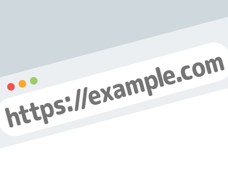

ドメインって何？初心者でもわかる取得・管理・選び方のすべて
目次
はじめに：ドメインって何？
インターネットの世界には、無数の“場所”があります。
ブログ、ポートフォリオ、ショップ、サービス、コミュニティ──
それぞれが、誰かの想いや活動の拠点として、静かに存在しています。
そんな場所をつくるとき、必要になるのが「ドメイン」です。
ドメインとは、かんたんに言えばインターネット上の“住所”のようなもの。
たとえば「example.com」や「yourname.jp」など、WebサイトのURLに使われる名前のことです。
住所がなければ、誰もその場所にたどり着けません。
逆に言えば、ドメインを持つことで、あなたの“場所”が世界中に開かれるのです。
🔹 なぜドメインが必要なの？
「無料ブログやSNSでも発信できるのに、わざわざドメインを取る意味ってあるの？」
そう思うかもしれません。
でも、独自ドメインには“自分の名前で立つ”という意味があります。
- 自分のブランドや活動を、ひとつの場所にまとめたい
- ポートフォリオや作品集を、信頼感のある形で見せたい
- サービスやコンテンツを、長く育てていきたい
そんなとき、独自ドメインはあなたの世界を支える土台になります。
🔹 難しそう？でも大丈夫
「ドメインって、なんだか難しそう…」
そう感じるのも自然なことです。
でも、いまは誰でも簡単にドメインを取得できる時代。
お名前.comなどのサービスを使えば、検索・購入・設定まで、すべてWeb上で完結します。
この記事では、ドメインの基本から取得・管理・活用方法まで、
初心者さんにもわかりやすく、そして少しだけ詩的に、丁寧にお届けしていきます。
あなたの“場所”をつくる旅、いっしょに始めてみませんか？
ドメインの仕組みと種類
ドメインとひとことで言っても、その種類はさまざま。
「.com」「.jp」「.net」「.site」など、見たことがある人も多いはず。
ここでは、ドメインの構造と種類について、やさしく解説していきます。
[PR]

🔹 ドメインの構造を知ろう
たとえば、次のようなURLを見てみましょう：
https://example.com
- example： これは「セカンドレベルドメイン」と呼ばれ、自由に決められる部分です。
- .com： これは「トップレベルドメイン（TLD）」と呼ばれ、用途や国によって種類があります。
つまり、ドメイン名 = セカンドレベルドメイン + トップレベルドメインという構造になっています。
🔹 トップレベルドメイン（TLD）の種類
TLDには、大きく分けて2つのタイプがあります：
- gTLD（分野別ドメイン）： .com / .net / .org / .info / .site など
- ccTLD（国別ドメイン）： .jp（日本） / .us（アメリカ） / .uk（イギリス）など
それぞれに特徴があるので、目的に合わせて選ぶのがポイントです。
🔸 .com（コム）
もっとも一般的で、商用・個人問わず人気。迷ったらこれ。
🔸 .jp（ジェイピー）
日本国内の信頼感があり、法人・個人問わず使える。日本語サイトにおすすめ。
🔸 .net / .org / .info
やや専門性や非営利感がある印象。技術系や団体サイトに向いていることも。
🔸 .site / .blog / .design など
新しいTLD。用途が明確で、個性を出したいときに◎
🔹 どれを選べばいいの？
基本的には、.comや.jpが無難で安心。
ただし、すでに使われていることも多いので、自分の名前や活動に合ったTLDを探すのも楽しい時間です。
たとえば：
- ポートフォリオ →
yourname.jp/yourname.design - ブログ →
yourname.blog - ブランドサイト →
yourbrand.com/yourbrand.site
ドメインは、あなたの“名前”であり“看板”でもあります。
だからこそ、意味や響き、印象を大切に選んでみてください。
[PR]
ドメイン名の決め方
ドメインのTLD（.com や .jp など）を選んだら、次はセカンドレベルドメイン──つまり「名前」の部分を決めましょう。
これは、あなたのWeb上の“看板”になる大切な要素。
たとえば「yourname.com」や「quietdesign.jp」のように、世界にひとつだけの名前になります。
🔹 決め方のポイント
- 覚えやすい： 短くてシンプルな名前は、口頭でも伝えやすい
- 綴りやすい： スペルミスされにくい名前が理想
- 活動と一致： ブログ名・ブランド名・ハンドルネームと揃えると◎
- 被りに注意： すでに使われていないか、商標に触れないか確認
🔹 避けたいNGパターン
- 長すぎる（例：
thisismyawesomewebsite123456.com） - 記号が多い（例：
my-site_2025.com） - 他ブランドと紛らわしい（例：
amaz0n-shop.net）
ドメイン名は一度決めると長く使うことが多いので、じっくり考える価値があります。
🔹 詩的なネーミングのすすめ
もしあなたが、世界観や空気感を大切にしたいなら、響きや余白にもこだわってみてください。
- 静けさを感じる名前：
quietroom.jp/stillness.site - 詩的な響き：
mizuha.net/hoshifuru.com - 造語やひらがな：
yururi.jp/nemurine.com
意味だけでなく、音のやさしさや視覚の印象も、ドメインには宿ります。
あなたの活動や想いに、そっと寄り添う名前を──
そんな気持ちで、ドメイン名を選んでみてください。
ドメイン取得の流れ
ドメイン名が決まったら、いよいよ取得のステップへ！
ここでは、お名前.comを例に、実際の流れを見ていきましょう。
🔹 ステップ1：空きドメインを検索する
まずは、希望のドメイン名が使えるかどうかを検索します。
▶ PR:ドメインを検索してみる：
お名前.comでドメインを探す
検索結果では、.com や .jp など、さまざまなTLDの空き状況が一覧で表示されます。
🔹 ステップ2：取得したいドメインを選ぶ
気に入ったドメインが空いていたら、カートに追加して申し込みへ進みます。
迷ったら、まずは1年契約で試してみるのもおすすめです。
🔹 ステップ3：会員登録と支払い
メールアドレスとパスワードを登録し、支払い方法を選択します。
クレジットカード・コンビニ払い・PayPayなど、支払い方法も豊富です。
🔹 ステップ4：ネームサーバーの設定
取得後は、ドメインをどのサーバーで使うかを指定します。
たとえば、レンタルサーバーやGitHub Pagesなどに向けて設定します。
この設定はあとからでも変更できるので、最初は「お名前.comの初期設定」のままでもOKです。
🔹 ステップ5：取得完了！
これで、あなたのドメインがインターネット上に誕生しました！
あとはWebサイトをつくって、ドメインとつなげるだけです。
ドメイン取得は、思っているよりずっと簡単。
そして、“自分の名前で立つ”という感覚は、きっと特別なものになるはずです。
おすすめの取得サービス比較
ドメインはさまざまなサービスで取得できますが、どこで買うかによって価格や機能、管理のしやすさが変わってきます。
ここでは、代表的なドメイン取得サービスを比較してみましょう。
| サービス名 | 特徴 | おすすめポイント |
|---|---|---|
| お名前.com | 国内最大手。TLDの種類が豊富で、セールも頻繁 | 価格が安く、管理画面も日本語で安心。 初心者〜中級者におすすめ |
| ムームードメイン | やさしいUIとサポート。ロリポップとの連携がスムーズ | ブログや個人サイトを気軽に始めたい人に◎ |
| Google Domains | シンプルで広告なし。Googleアカウントと連携 | 英語UIでもOKな人、Googleサービスと連携したい人に |
| Xserverドメイン | サーバーとセットで使うとお得。日本語UIで安心 | Xserverを使う予定がある人におすすめ |
どのサービスも一長一短ですが、「日本語で安心して使いたい」「選べる種類が多い」「価格を抑えたい」という人には、やっぱりお名前.comが人気です。
▶ PR:今すぐ検索してみる：
お名前.comでドメインを探す
サービス選びに迷ったら、まずは検索画面の使いやすさや管理画面の見やすさをチェックしてみるといいですよ。
独自ドメインのメリット・デメリット
「独自ドメインって必要なの？」
そんな疑問を持つ人も多いと思います。
ここでは、独自ドメインを持つメリットとデメリットを、リアルな視点で整理してみましょう。
🔹 メリット
- 信頼感が高まる： URLが「example.com」になるだけで、印象がぐっと引き締まる
- ブランディングに使える： 名前や活動に合わせたドメインで、世界観を表現できる
- サービスに依存しない： SNSや無料ブログが終了しても、ドメインは自分のもの
- メールアドレスにも使える：
info@example.comのような独自メールが作れる - SEOにも有利： 長期的に育てたドメインは、検索エンジンからの評価も高まりやすい
🔹 デメリット
- 費用がかかる： 年間1,000〜3,000円ほどの維持費が必要
- 更新忘れのリスク： 有効期限を過ぎると、ドメインが失効してしまう
- 最初の設定がやや難しい： DNSやネームサーバーなど、少し学ぶ必要がある
とはいえ、最近は取得も管理もとても簡単になってきていて、
「最初の一歩さえ踏み出せば、あとはスムーズ」という声が多いのも事実です。
何より、独自ドメインを持つことで得られる“自分の場所”という感覚は、
きっとあなたの活動に、静かな自信と軸を与えてくれるはずです。
ドメインとサーバーの関係
ドメインを取得しただけでは、まだWebサイトは表示されません。
それを“どこで”表示するかを決めるのが、サーバーの役割です。
そして、ドメインとサーバーをつなぐために必要なのが、DNS（ドメインネームシステム）という仕組みです。
🔹 DNSってなに？
DNSは、ドメイン名をIPアドレスに変換する仕組みのこと。
インターネット上では、すべてのサーバーが「123.45.67.89」のような数字の住所（IP）を持っています。
でも、数字だけでは覚えにくいので、
「example.com → 123.45.67.89」と変換してくれるのがDNSの役割です。
🔹 ネームサーバーとは？
ネームサーバーは、DNSの情報を管理している場所のこと。
ドメインを取得したあと、「このドメインはこのサーバーで使いますよ」と指定する必要があります。
たとえば：
- お名前.comで取得 → エックスサーバーで使う → エックスサーバーのネームサーバーを設定
- お名前.comで取得 → GitHub Pagesで使う → AレコードやCNAMEを設定
[PR]

🔹 よく出てくる用語たち
- Aレコード： ドメインをIPアドレスに結びつける設定
- CNAMEレコード： 他のドメイン名に転送する設定（例：
www.example.com → example.com） - MXレコード： メールサーバーの設定（独自ドメインメールを使うとき）
最初はちょっと難しく感じるかもしれませんが、
多くのレンタルサーバーやサービスでは、「コピペでOK」な設定ガイドが用意されています。
ドメインとサーバーがつながった瞬間、
あなたの“場所”が、世界中からアクセスできるようになります。
ドメインの管理と更新
ドメインは取得して終わりではありません。
長く使っていくためには、定期的な管理と更新が必要です。
🔹 有効期限と更新
ドメインには「契約期間」があり、通常は1年ごとの更新です。
更新を忘れると、ドメインが失効してしまい、Webサイトやメールが使えなくなってしまいます。
対策としては：
- 自動更新をONにする： クレジットカード払いなら自動更新が便利
- 更新通知メールを見逃さない： 登録メールアドレスは常に確認できるものに
🔹 Whois情報の公開と非公開
ドメインを取得すると、Whois（フーイズ）情報として、登録者の名前や連絡先が公開されることがあります。
ただし、最近ではWhois情報の代理公開が標準で付いているサービスも多く、
お名前.comでも無料で非公開設定が可能です。
🔹 SSL証明書との関係
独自ドメインを使うなら、SSL（https化）も忘れずに。
セキュリティのためだけでなく、SEOや信頼性にも関わってきます。
無料で使えるSSL（Let’s Encrypt）を提供しているサーバーも多いので、
ドメインと合わせてSSLの設定も確認しておきましょう。
🔹 管理画面を定期的にチェック
ドメインの状態や設定は、管理画面からいつでも確認できます。
年に数回でもいいので、ログインして状況をチェックしておくと安心です。
ドメインは、あなたのWebの“住所”。
だからこそ、大切に、静かに、育てていく感覚が大事です。
コラム：ドメインに“世界観”を込めるということ
ドメインは、ただの文字列ではありません。
それは、あなたの世界をそっと映し出す“名前”です。
たとえば、quietroom.jp というドメインには、
静けさと、内省の時間を大切にする空気が漂っています。
hoshifuru.com という名前には、
夜空を見上げるような、詩的なまなざしが宿っています。
ドメイン名は、検索結果に並ぶときも、SNSでシェアされるときも、
いつもあなたの活動の“顔”として、そっとそこにいます。
🔹 響き・余白・印象
ドメインを選ぶとき、意味だけでなく、響きや視覚の印象にも耳を澄ませてみてください。
- やわらかい音の並び
- 短くて、余白を感じる文字数
- ひらがな・ローマ字・造語のバランス
それはまるで、詩のタイトルをつけるような時間。
たったひとつの言葉に、あなたの世界観を託す瞬間です。
🔹 名前は、あなたの灯りになる
インターネットの海は広くて、静かで、時にざわついています。
そんな中で、あなたのドメインは、小さな灯りのようなもの。
誰かがその灯りを見つけて、そっと訪れてくれる。
そんな出会いの入り口を、自分の手でつくることができるのです。
だからこそ、ドメインには、あなたらしさを込めてみてください。
それは、きっと誰かの記憶に残る“名前”になります。
まとめ：ドメインは“あなたの場所”をつくる鍵
ドメインは、インターネットの中にあなたの居場所をつくるための鍵です。
名前を決めて、取得して、つないで、育てていく。
その過程は、まるで“家を建てる”ような感覚に近いかもしれません。
最初は小さな一歩でも、そこから広がる世界はきっと大きい。
ポートフォリオ、ブログ、ブランド、サービス──
どんな形であっても、自分の名前で発信することには、特別な意味があります。
この記事が、あなたの“場所づくり”のきっかけになれたなら、
それはとても嬉しいことです。
▶ PR:ドメインを探してみる：
お名前.comでドメインを探す
さあ、あなたの名前で、あなたの場所をつくってみましょう。
その灯りが、誰かの心に届く日を願って。
[PR]